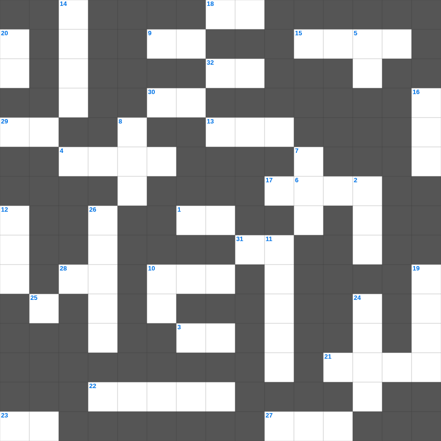

다니엘과 세 친구
📌 서비스 정의
십자가로세로는 교회 주보와 주일학교에서 사용할 수 있는 성경 기반 가로세로 퍼즐 서비스입니다. 성경 인물, 사건, 핵심 구절을 바탕으로 제작되었습니다. 온라인 풀이 및 인쇄 기능을 제공합니다.
다니엘과를 주제로 한 다니엘과 주일학교 퀴즈입니다. 35개의 단어를 맞춰보세요! 가로세로 낱말 퍼즐 형식으로 다니엘과의 핵심 내용을 재미있게 복습할 수 있습니다.

📝 가로 힌트
1. 르호보암 왕 때 나라가 둘로 나뉨
3. 정해진 성경 본문을 읽는 것
4. 예수님이 산 위에서 전하신 복음의 핵심
6. 노아의 방주에 비가 내린 일수
9. 시편 다음 책
10. 대제사장의 흉패에 박힌 열두 보석 중 하나
13. 하나님이 시내산에서 모세에게 주신 법
15. 떡 다섯 개와 물고기 두 마리로 오천 명을 먹이심
17. 초대 교회에서 구제를 위해 세운 일곱 이것
18. 예수님이 십자가에서 돌아가신 사건
21. 바울이 복음을 전하다가 돌에 맞은 곳
22. 바울이 아덴(아테네)에서 복음을 전한 곳
23. 새 예루살렘 성의 열두 문 재질
27. 아론의 지팡이에서 핀 꽃
28. 하나님은 모든 사람이 구원을 받으며 이것을 아는 데 이르기를 원하시느니라
29. 하나님께 드리는 거룩한 예식
30. 보냄을 받은 자라는 뜻
31. 요나가 다시스로 가기 위해 배를 탄 항구
32. 성령의 검은 곧 하나님의 이것
📝 세로 힌트
2. 용서할 때 일흔 번씩 몇 번까지?
5. 여호와 이것: 준비하시는 하나님
7. 죽은 지 나흘 만에 살아난 사람
8. 이 기적을 베푸신 분
8. 유대인의 왕, 나사렛 이것
10. 노아 시대에 온 세상을 뒤덮은 물 심판
11. 이스라엘이 바벨론으로 끌려간 사건
12. 세계 최초의 소방관은 누구일까요? (불 속에서 살아남음)
14. 거짓 이것들이 일어나 많은 사람을 미혹함
16. 야곱이 축복을 받기 위해 팔에 붙인 것
19. 항상 이것하라
20. 인류 최초의 동물원 원장은 누구일까요?
24. 기름 부음 받은 자
24. 살아계신 하나님의 아들
25. 공의를 마르지 않는 이것 같이 흐르게 하라
26. 야곱이 형의 낯을 피해 도망가다 꿈을 꿈
🧑🏫 교회 교육 자료 활용
이 퍼즐은 주일학교 교재 추천 자료로 활용할 수 있고, 주일학교 주보에 넣기 좋은 분량으로 구성되어 있습니다. 수업용 주일학교 교안에 활동지로 붙이거나, 예배 후 복습용 주일학교 공과교재로 바로 사용할 수 있습니다.
🏷️ 키워드
다니엘과 주일학교 퀴즈, 다니엘과, 십자가로세로, 성경퀴즈, 말씀퀴즈, 가로세로퍼즐, 주일학교 교재 추천, 주일학교 주보, 주일학교 교안, 주일학교 공과교재